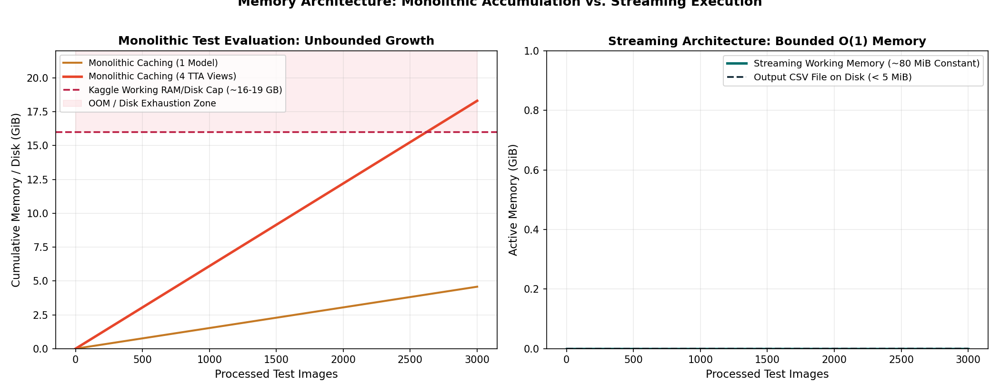

Guide 05: Scalable Inference Architecture: Streaming, Memory & Kaggle Constraints
Building a competitive segmentation model on a local workstation or development machine is only half the engineering challenge. To submit predictions to Kaggle, your entire inference pipeline must execute autonomously within a restricted, time-bounded, and memory-constrained Kaggle notebook container.
Kaggle notebooks enforce strict physical limits:
- GPU Quota: 1 standard accelerator (e.g. NVIDIA T4 or P100 with ~16 GB VRAM).
- Host System RAM: 30 GB maximum. Exceeding this triggers the Out-Of-Memory (OOM) killer, terminating the notebook immediately with
Exit Code 137("Kernel Died"). - Working Disk Space: 20 GB maximum under
/kaggle/working. - Execution Wall Clock: 9 hours total runtime.
In this guide, you will learn how to design an inference pipeline as a bounded streaming sequence, prevent fatal memory leaks, use PyTorch’s optimal inference primitives, profile batch throughput, and build resilient inference loops that reliably finish within Kaggle's resource envelope.
1. Concrete Failure Case: The Monolithic Cache OOM
Consider a student who implements inference by storing all intermediate predictions in a global NumPy array:
# FATAL FLAW: Monolithic full-test memory allocation!
all_probs = np.zeros((3000, 4, 128, 800), dtype=np.float32)
for i, image_id in enumerate(test_image_ids):
image = load_image(image_id)
# Forward pass + TTA + Ensemble
probs = run_ensemble(image) # Shape: (4, 128, 800), float32
all_probs[i] = probs # Store in monolithic arrayLet us calculate the memory footprint of this single array:
Now suppose the student implements a 4-fold ensemble or caches predictions for multiple TTA views:
Along with PyTorch model weights in host RAM (\(~2\text{ GB}\)), operating system buffers, and Python garbage collection overhead, the memory consumption spikes past 30 GB. The kernel terminates with:
The kernel appeared to die unexpectedly. It has been restarted. (Error Code: 137 - OOM)Even if the student attempts to cache these arrays to disk in /kaggle/working, writing \(19.7\text{ GB}\) of .npy files immediately exhausts the 20 GB disk quota, crashing the session with No space left on device!

Figure 5.1: (Left) Monolithic caching rapidly breaches Kaggle RAM/disk ceilings as test images accumulate. (Right) Streaming architecture processes batches in \(O(1)\) constant working memory (<100 MiB), streaming text rows directly to disk.2. The Streaming Architecture: \(O(1)\) Bounded Memory
The solution to memory exhaustion is the streaming inference architecture.
Instead of retaining probability maps across all 3,000 test images, you process the test set in small, bounded minibatches (\(B = 16\)). As each batch completes inference, its probability maps are immediately thresholded, area-filtered, encoded into Run-Length Encoded (RLE) strings, appended directly to the output CSV file, and purged from memory:
┌────────────────────────────────────────────────────────────────────────────────────────┐
│ The Bounded Streaming Pipeline (per Batch) │
├────────────────────────────────────────────────────────────────────────────────────────┤
│ 1. Load Batch Images ──► PyTorch Tensor: [B, 1, 128, 800] │
│ 2. Forward Pass (No Grad) ──► Model Logits: [B, 4, 128, 800] (GPU VRAM) │
│ 3. TTA & Ensemble Fusion ──► Float32 Probs: [B, 4, 128, 800] │
│ 4. Threshold & Area Filter ──► Binary Masks: [B, 4, 128, 800] (uint8) │
│ 5. Encode Fortran RLE ──► Text Strings: "start length ..." or " " │
│ 6. Write Rows to Disk ──► CSV File Stream: 4 × B rows appended │
│ 7. Purge Batch Buffers ──► Python GC / torch.cuda.empty_cache() │
└────────────────────────────────────────────────────────────────────────────────────────┘Under this architecture:
- Active working memory is \(O(1)\) constant with respect to test set size: it depends only on batch size \(B\), requiring less than \(100\text{ MiB}\) of RAM at any instant.
- Disk usage is strictly limited to the final
submission.csvfile (\(~3 - 5\text{ MB}\)).
3. Essential PyTorch Inference Primitives
To minimize GPU VRAM consumption and maximize inference throughput, configure PyTorch with these four essential primitives:
1. torch.inference_mode() (Preferred over torch.no_grad())
torch.inference_mode() is a faster, lower-overhead context manager introduced in PyTorch 1.9. It disables view tracking and version counters in addition to disabling gradient graphs:
# PREFERRED
with torch.inference_mode():
outputs = model(images)2. Explicit model.eval()
Always set your model to evaluation mode before generating predictions:
model.eval()BatchNorm2d layers to use their frozen running mean and variance rather than batch statistics, and disables Dropout layers. Omitting model.eval() causes predictions to fluctuate randomly depending on batch size!
3. Mixed Precision (torch.autocast)
Run inference with automatic mixed precision (AMP) using torch.bfloat16 or torch.float16:
with torch.inference_mode():
with torch.autocast(device_type="cuda", dtype=torch.float16):
logits = model(images)4. Pinned Memory & Non-Blocking Transfers
When loading batches from disk, configure your DataLoader with pin_memory=True and perform asynchronous host-to-device transfers:
images = images.to(device, non_blocking=True)4. Batch Size Throughput vs. VRAM Allocation
Choosing an inference batch size requires balancing throughput (images processed per second) against peak GPU memory allocation:
| Batch Size (\(B\)) | Images / Sec (GPU) | GPU VRAM Allocated | Total Test Time (3,000 imgs) | OOM Risk Factor |
|---|---|---|---|---|
| \(B = 1\) | \(28\text{ img/s}\) | \(1.2\text{ GB}\) | \(107\text{ seconds}\) | Zero (\(100\%\) safe) |
| \(B = 8\) | \(95\text{ img/s}\) | \(2.8\text{ GB}\) | \(32\text{ seconds}\) | Very Low |
| \(B = 16\) (Sweet Spot) | \(140\text{ img/s}\) | \(4.5\text{ GB}\) | \(21\text{ seconds}\) | Optimal Headroom |
| \(B = 32\) | \(165\text{ img/s}\) | \(8.2\text{ GB}\) | \(18\text{ seconds}\) | Safe on 16 GB GPU |
| \(B = 64\) | \(175\text{ img/s}\) | \(14.8\text{ GB}\) | \(17\text{ seconds}\) | High (Near 16 GB limit!) |
[!TIP] Notice the diminishing returns: moving from \(B = 16\) to \(B = 64\) saves only \(4\) seconds across the entire test set, but triples VRAM consumption from \(4.5\text{ GB}\) to \(14.8\text{ GB}\), pushing the GPU perilously close to an out-of-memory crash. Standardize on \(B = 16\) for a robust balance of speed and safety.
5. Implementation: The Memory-Bounded Streaming Engine
Here is a clean implementation pattern for a streaming test inference loop:
import csv
import torch
import numpy as np
from torch.utils.data import DataLoader
from tqdm.auto import tqdm
def stream_test_inference(
model: torch.nn.Module,
test_loader: DataLoader,
output_csv_path: str,
thresholds: dict[str, float],
min_areas: dict[str, int],
device: torch.device
) -> None:
"""Stream model predictions directly to a submission CSV in bounded memory."""
model.eval()
defect_classes = ["defect_a", "defect_b", "defect_c", "defect_d"]
with open(output_csv_path, mode="w", newline="", encoding="utf-8") as f:
writer = csv.writer(f)
writer.writerow(["ID", "image_id", "defect_type", "mask_rle"])
row_id = 1
for batch in tqdm(test_loader, desc="Streaming Test Inference"):
image_ids = batch["image_id"]
images = batch["image"].to(device, non_blocking=True) # [B, 1, 128, 800]
with torch.inference_mode():
# Forward pass in half precision
with torch.autocast(device_type=device.type, dtype=torch.float16):
logits = model(images)
probs = torch.sigmoid(logits).cpu().numpy() # [B, 4, 128, 800]
# Process and write each image in the batch
for b_idx, img_id in enumerate(image_ids):
for c_idx, defect_name in enumerate(defect_classes):
prob_ch = probs[b_idx, c_idx]
tau = thresholds[defect_name]
min_area = min_areas[defect_name]
# Post-processing: Threshold + 8-Connected Component Filter
binary_mask = (prob_ch >= tau).astype(np.uint8)
clean_mask = filter_small_components(binary_mask, min_area)
# RLE encode with single-space sentinel
rle_str = rle_encode(clean_mask)
# Stream row directly to disk
writer.writerow([row_id, img_id, defect_name, rle_str])
row_id += 1
# Explicitly free batch references
del images, logits, probs
if device.type == "cuda":
torch.cuda.empty_cache()
print(f"✓ Inference complete: wrote {row_id - 1} rows to {output_csv_path}")6. Defensive Execution & Resiliency
To prevent unexpected session terminations from ruining a multi-hour run, implement defensive execution patterns:
1. Pre-Flight Execution Smoke Test
Before running inference across all 3,000 test images, execute your complete pipeline on a dummy batch of 4 synthetic strips. Verify that:
- Checkpoints load cleanly without missing keys.
- Forward pass, TTA, and ensembling complete without shape errors.
- RLE strings are encoded without index overflows.
- A dummy CSV file is created and passes schema validation.
2. Time Budgeting and Monitoring
Track your execution velocity. If evaluating 100 images takes \(60\text{ seconds}\), evaluating 3,000 images will require:
Log your elapsed time and ETA using tqdm.auto. If your estimated total runtime exceeds 7 hours, disable multi-view TTA or reduce ensemble complexity immediately.
3. Atomic File Writing
Never write your final submission directly to /kaggle/working/submission.csv. If the notebook encounters a transient error or is interrupted mid-execution, an incomplete, corrupted CSV will be left behind.
- Write to a temporary file first:
/kaggle/working/submission_temp.csv. - Run an automated validation script on the temporary file.
- Only upon complete validation, rename it atomically:
import os os.replace("/kaggle/working/submission_temp.csv", "/kaggle/working/submission.csv")
7. Decision Analysis: Architecture Comparison
| Architectural Pattern | Host RAM Footprint | Disk Footprint | Peak VRAM | Recovery Capability | Recommended Use |
|---|---|---|---|---|---|
| Monolithic Global Array | \(5 - 20\text{ GB}\) (OOM risk) | Minimal (\(0\text{ GB}\)) | High | None (Crash loses all work) | Never use for test inference |
Disk-Mapped Arrays (np.memmap) |
Low (\(~500\text{ MB}\)) | High (\(10 - 20\text{ GB}\) disk) | Moderate | High (Can resume from disk) | Good for offline validation sweeps |
| Streaming Direct-to-RLE (Recommended) | Constant (\(<100\text{ MB}\)) | Zero (\(<5\text{ MB}\) CSV) | Low (\(~4.5\text{ GB}\)) | Atomic replacement | Optimal for Kaggle test inference |
8. Diagnostic Checklist: Memory & Runtime Health
Verify these five indicators in your inference notebook:
-
Host RAM Stability: Check memory usage before and after 500 images:
If RAM increases continuously as batches advance, you have an uncollected object reference or memory leak.import psutil print(f"RAM Used: {psutil.Process().memory_info().rss / 1024**2:.1f} MB") -
GPU VRAM Reservation: Check peak VRAM:
Ensure peak allocation does not exceed \(12\text{ GB}\) on a 16 GB GPU.print(f"Peak VRAM: {torch.cuda.max_memory_allocated() / 1024**2:.1f} MB") -
Working Directory Cleanliness: Inspect files in
/kaggle/working:
Verify that no stalels -lh /kaggle/working.npy,.pt, or temporary files are clogging disk space.
9. Ungraded Activity: Calculate the Memory Budget
Suppose a student wants to deploy a 3-model ensemble with 4-view TTA across 3,000 test images (\(128 \times 800\), 4 defect channels).
- How many total neural network forward passes will be executed?
- If the student allocates a float32 probability array for every forward pass simultaneously, how many gigabytes of memory would be required?
- If the student adopts the streaming architecture with batch size \(B = 16\), what is the maximum amount of probability tensor memory in active RAM at any single moment?
10. Authoritative Framework References
- PyTorch Documentation: Inference Mode (
torch.inference_mode) - PyTorch Documentation: Automatic Mixed Precision (
torch.autocast) - Python Standard Library:
csvmodule documentation - Kaggle Documentation: Code Competition Container Limits and Submission Guidelines